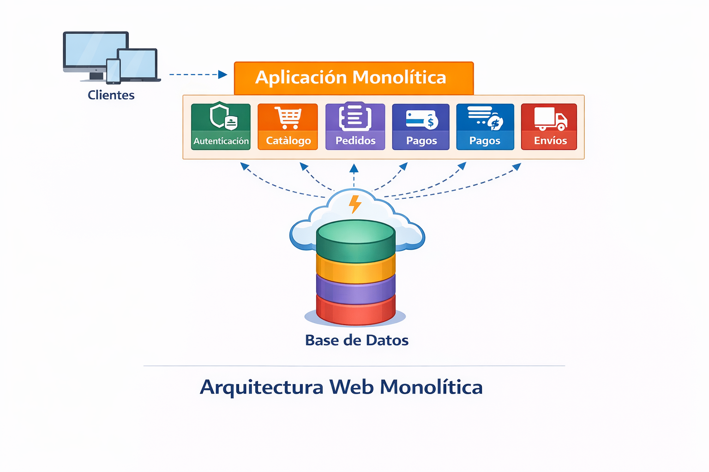
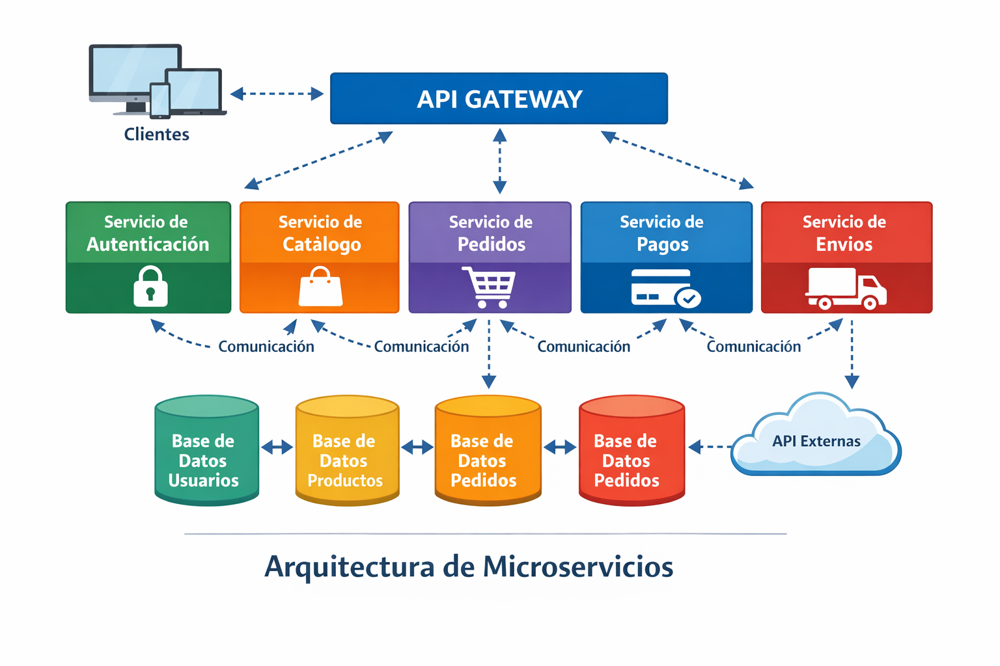
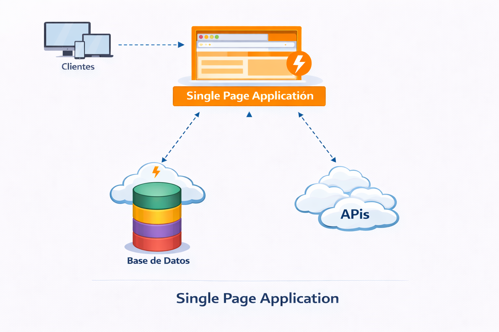
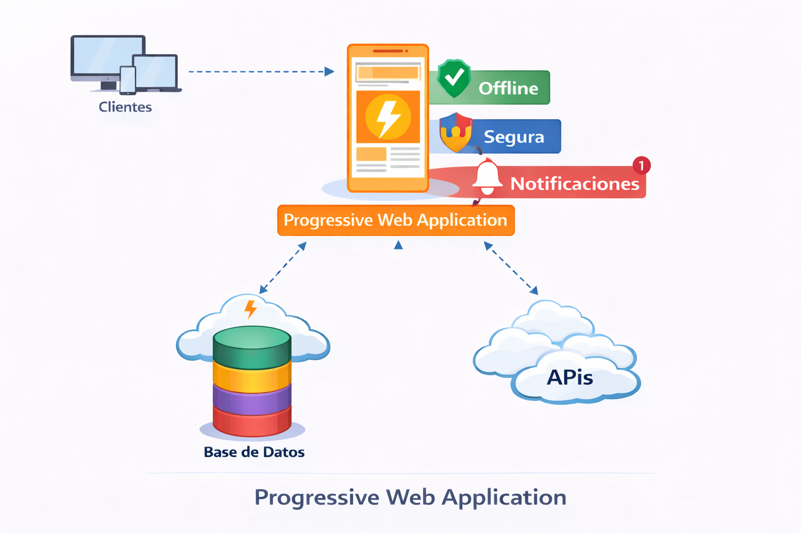

Arquitectura Web (Nivel General)
| Definición | Es la estructura técnica y lógica que organiza la interacción entre cliente (frontend), servidor (backend), bases de datos y servicios externos. Define el modelo estructural bajo el cual se construye y opera una aplicación web, estableciendo el flujo de información, la separación de capas y la distribución de responsabilidades. |
| Importancia |
|
| Características |
|
| Función | Organizar técnicamente la aplicación web para garantizar eficiencia operativa, crecimiento sostenible y facilidad de mantenimiento a largo plazo. |
Esquema Representativo

Tipos de arquitecturas de web
La arquitectura monolítica es un modelo de desarrollo en el que toda la aplicación web se construye
como una sola unidad o bloque de código. , es decir que todos los componentes de una aplicación
web
como:
- La interfaz de usuario.
- La lógica de negocio.
- El acceso a la base de datos.

En el desarrollo web, la arquitectura de microservicios es un enfoque donde una aplicación se divide
en pequeños servicios independientes , cada uno encargado de una función específica del sistema.
Cada microservicio:
Cada microservicio:
- Tiene su propia lógica de negocio.
- Puede tener su propia base de datos.
- Se despliega de forma independiente.
- Se comunica con otros servicios mediante APIs (normalmente HTTP/REST).

En el desarrollo web, la arquitectura sin servidor (Serverless) es un modelo donde el desarrollador
no
administra directamente los servidores ,en su lugar, un proveedor en la nube se encarga de la
infraestructura y ejecuta el código solo cuando es necesario.Aunque el nombre dice “sin servidor”, sí
existen
servidores, pero están gestionados automáticamente por el proveedor,por ende:

- No se administran servidores manualmente.
- Ejecución basada en eventos (por ejemplo, cuando un usuario hace una solicitud).
- Escalado automático.
- Pago por uso (solo se paga cuando el código se ejecuta).
La arquitectura de tres capas es un modelo de diseño de software que divide una aplicación en tres
niveles o capas independientes, cada una con una responsabilidad específica ,esto permite una
mejor organización, mantenimiento y escalabilidad del sistema.
Las tres capas son:
Porejemplo,la división en frontend (catálogo), backend (procesa pedidos) y base de datos (productos y órdenes) es la organización clara y mantenimiento sencillo.

Las tres capas son:
- Capa de Presentación Es la interfaz con la que interactúa el usuario.
- Formularios.
- Botones.
- Páginas web.
- Aplicaciones móviles.
- Capa de Lógica de Negocio También llamada capa de aplicación.
- Procesa datos.
- Aplica reglas del negocio.
- Toma decisiones.
- Capa de Datos Se encarga de almacenar y gestionar la información.
- Bases de datos.
- Consultas./li>
- Conexiones.
Porejemplo,la división en frontend (catálogo), backend (procesa pedidos) y base de datos (productos y órdenes) es la organización clara y mantenimiento sencillo.
El Modelo-Vista-Controlador (MVC) es un patrón de arquitectura que organiza una aplicación web en
tres
partes como lo son el modelo,vista y controlador , que cumplen la siguiente funcion:

- Modelo: Maneja los datos y la lógica.
- Vista: Muestra la información al usuario.
- Controlador: Recibe las acciones del usuario y conecta el Modelo con la Vista.
Una Single Page Application (SPA) o aplicación de una sola página es un tipo de aplicación web en
la
que toda la interacción ocurre dentro de una sola página web, sin que sea necesario recargarla
completamente cada vez que el usuario navega o realiza una acción , es decir que en lugar de cargar páginas
nuevas desde el servidor realiza los siguientes pasos:
- El SPA actualiza dinámicamente.
- Luego utiliza el contenido usando JavaScript.
- Crea una experiencia más rápida y fluida, similar a la de una aplicación de escritorio o móvil.

Una Progressive Web Application (PWA) o aplicación web progresiva es un tipo de aplicación web que
combina lo mejor de las páginas web y las aplicaciones móviles nativas .Es decir, la abres desde
el navegador pero ofrece funciones típicas de una aplicación instalada en tu celular o computador.No
necesitas
descargarla desde una tienda de aplicaciones, pero puedes:
- Instalarla en tu dispositivo
- Usarla sin internet (en muchos casos)
- Recibir notificaciones
- Abrirla en pantalla completa como una app

La arquitectura limpia, también conocida como arquitectura hexagonal, es un estilo de diseño de
software que busca separar claramente las responsabilidades del sistema para hacerlo:

- Mantenible.
- Probable
- Escalable